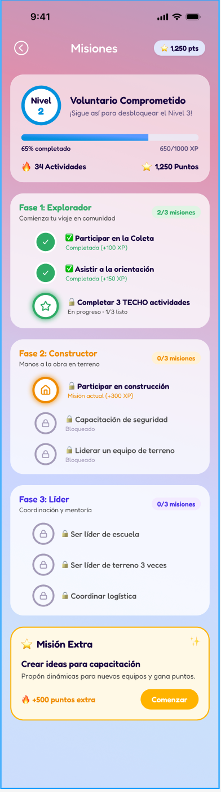
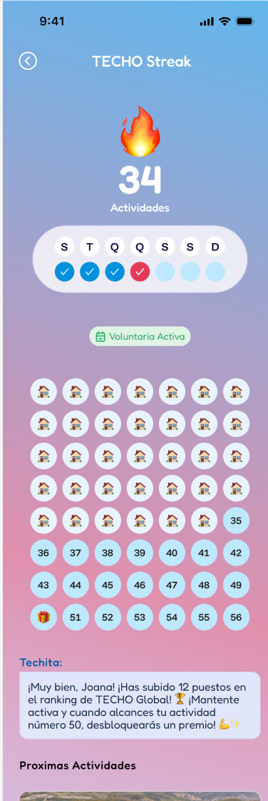
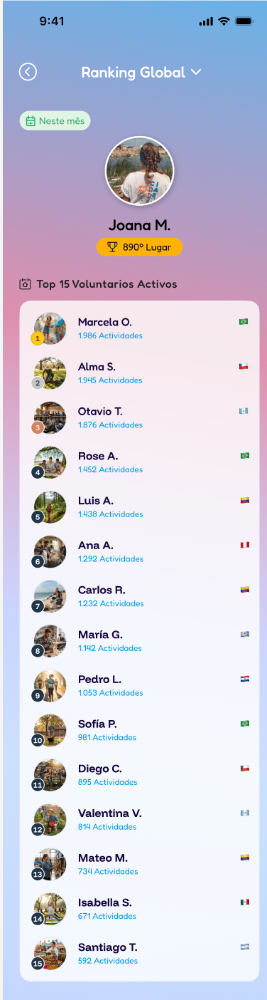
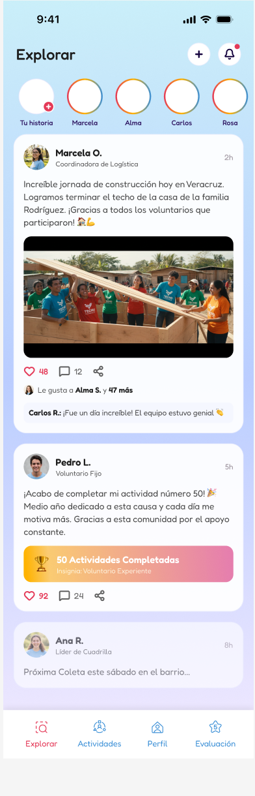
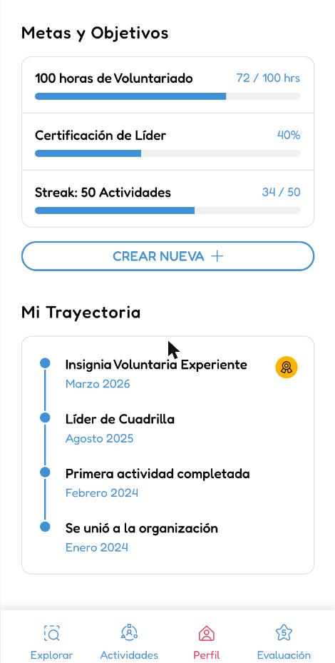

// roadmap MiTECHO · V3 Experiencia del usuario · 2027–2028
El motor de gamificación de MiTECHO: un camino de viviendas para el voluntariado masivo y una carrera generacional para el equipo permanente. Todo se valida con datos que la plataforma ya registra.
cuentas nuevas, feb–abr 2026
se inscribe a una actividad
va, con asistencia validada
vuelve en 120 días
mediana entre la 1.ª y la 2.ª vez
fuente: sistema de actividades replicado en el DWH · cada % es contra la etapa anterior
01 · dos públicos
Uno mide experiencias; el otro, desarrollo. Rookie, Champion y Guardián son solo del equipo permanente.
voluntariado masivo
Se suman a actividades masivas y recién conocen la organización. Juegan un camino tipo Duolingo: cada mundo es una vivienda que construyen con misiones verificables.
misiones infinitasroles como clavoscolección de viviendasequipo permanente
Integran equipos de áreas y comunidades y sostienen la operación en territorio. Avanzan por generaciones, de Rookie a Alumni, en ciclos de 6 meses.
tiemporolesformaciónMHCvida de equipo02 · simulador del camino
Completá los clavos en orden y mirá cómo se construye: pilotes, piso, paredes y techo. La inauguración cierra el mundo, entrega la tarjeta del modelo y desbloquea los roles del mundo siguiente.
Los clavos se validan con presente por QR, rol en la inscripción (roles_aplicados) o evaluación enviada. ● dorado = actividad con baja convocatoria (×1,5 XP). Cantidad de clavos: propuesta a calibrar.
Mundo 1 · vivienda insignia
Como en cada vivienda TECHO: cortamos la cinta con los colores del país, junto a la familia.
¡Vivienda inaugurada! Un nuevo hogar y un nuevo mundo completo.
Mundo 1 · vivienda insignia
Datos a completar con el relevamiento de modelos por país. Orden histórico, igual para todas las personas.
03 · economía
La XP mide trayectoria: solo sale del presente validado por QR y nunca baja. Los puntos son moneda (1 punto cada 2 XP, más evaluaciones y medallas con tope) y se canjean por TECHO Perks.
resultado por presencia
XP · 150 puntos
Racha: +5% de XP por mes seguido con al menos una presencia, hasta +25%. Un mes sin actividad la congela; el segundo la reinicia. Valores: propuesta a calibrar.
04 · medallas
Celebran momentos y logros concretos, no la cantidad acumulada. Dan puntos una sola vez; nunca XP.
| Familia | Bronce | Plata | Oro | Para quién |
|---|
05 · equipo permanente
Cada generación se vive en grupo y el salto lo confirma la coordinación en la devolución del ciclo de 6 meses. Tocá cada generación.
antigüedad desde la primera membresía
de equipo y en actividades masivas
Saber comprender, relacionarse y transformar
metas e hitos, nota 1 a 5 por ciclo
reuniones, devoluciones y encuentros
06 · visual
Estas pantallas marcan la línea visual de MiTECHO V3: colores, componentes y tono. Sobre esta base se monta la lógica del juego.





07 · datos
Casi todo lo que alimenta el juego ya está en techo/actividades. Falta guardar el juego en sí: movimientos de XP y puntos, medallas y misiones.
| Señal | Dónde vive hoy | Estado |
|---|---|---|
| Presencia | Inscripcion.presente (QR) | existe |
| Tipo de actividad | Tipo.tipo_indicador | existe |
| Rol asumido | Inscripcion.roles_aplicados | existe |
| Cupo y convocatoria | Actividad.limiteInscripciones | falta foto 7 días antes |
| Evaluaciones | EvaluacionActividad · EvaluacionImpactoActividad · EvaluacionPersona | existe |
| Membresía y antigüedad | Integrante · roles_integrante | existe |
| Reuniones de equipo | equipo_reunion | falta minuta |
| Formación por pilar · MHC | — | a construir |
| Modelos de vivienda | catálogo por país | relevamiento |
| XP, puntos, medallas, misiones | ledger + catálogo | a construir |